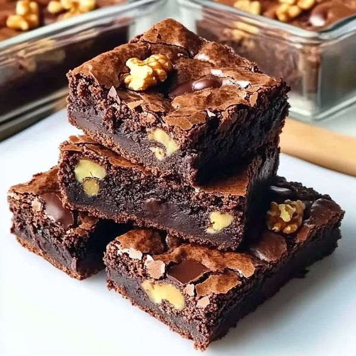

Brownie de Chocolate com Nozes
Um brownie denso, úmido e cheio de sabor, com pedaços crocantes de nozes. Ideal para sobremesas rápidas e irresistíveis.

Ingredientes
Rende 12 pedaços
- 200g de chocolate meio amargo
- 150g de manteiga
- 3 ovos
- 1 e 1/4 xícara de açúcar
- 3/4 xícara de farinha de trigo
- 1/4 xícara de cacau em pó
- 1 xícara de nozes picadas
- 1 pitada de sal
Modo de Preparo
Tempo estimado: 35 minutos
- Preaqueça o forno a 180 °C e unte uma forma quadrada com manteiga e papel manteiga.
- Derreta o chocolate e a manteiga juntos em banho-maria ou no micro-ondas.
- Em uma tigela, bata os ovos com o açúcar até obter uma mistura fofa.
- Adicione o chocolate derretido à mistura de ovos e mexa bem.
- Peneire a farinha, o cacau e o sal sobre a massa e misture delicadamente.
- Acrescente as nozes picadas e incorpore.
- Despeje a massa na forma e leve ao forno por 25 a 30 minutos (o interior deve ficar úmido).
- Deixe esfriar, corte em quadrados e sirva.
Dica do Chef: Para um sabor ainda mais intenso, acrescente raspas de laranja ou uma colher de sopa de café solúvel na massa.